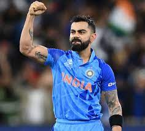

Biography
Virat Kohli (Hindi pronunciation: [ʋɪˈɾɑːʈ ˈkoːɦli] ⓘ; born 5 November 1988) is an Indian international cricketer and the former captain of the Indian national cricket team. He currently represents Royal Challengers Bangalore in the IPL and Delhi in domestic cricket. Kohli is widely regarded as one of the greatest batsmen in the history of the sport, and the best of this era.[3] He is the highest run scorer in T20I and IPL. In 2020, the International Cricket Council named him the male cricketer of the decade. Kohli is currently fourth-highest run-scorer in international cricket and stands second in the list of most international centuries scored. He also holds the record for scoring the most centuries in One Day International cricket.[4][5] Kohli was a member of the Indian team that won the 2011 Cricket World Cup and 2013 ICC Champions Trophy.
He has received many accolades for his performances on the cricket field. He was recognized as the ICC ODI Player of the Year in 2012 and has won the Sir Garfield Sobers Trophy, given to the ICC Cricketer of the Year, on two occasions, in 2017 and 2018 respectively. Subsequently, Kohli also won ICC Test Player of the Year and ICC ODI Player of the Year awards in 2018, becoming the first player to win both awards in the same year. Also, he was named the Wisden Leading Cricketer in the World for three consecutive years, from 2016 to 2018. At the national level, Kohli was honoured with the Arjuna Award in 2013, the Padma Shri under the sports category in 2017 and the Khel Ratna award, India's highest sporting honour, in 2018.
Image
Quotes
I always dreamt of holding the bat and winning games for India.